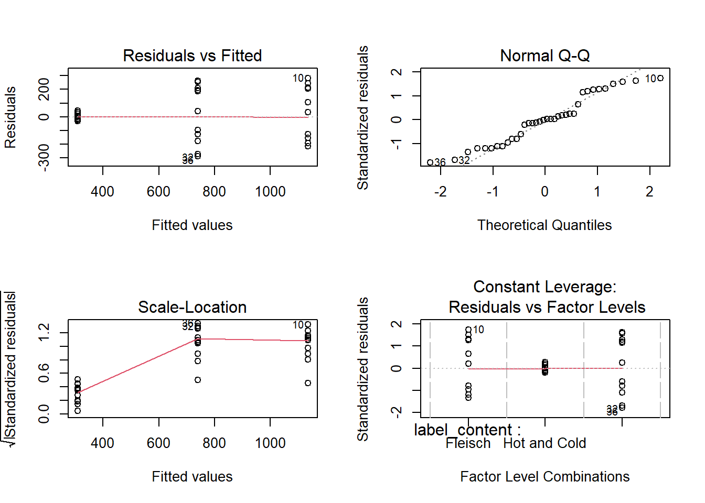
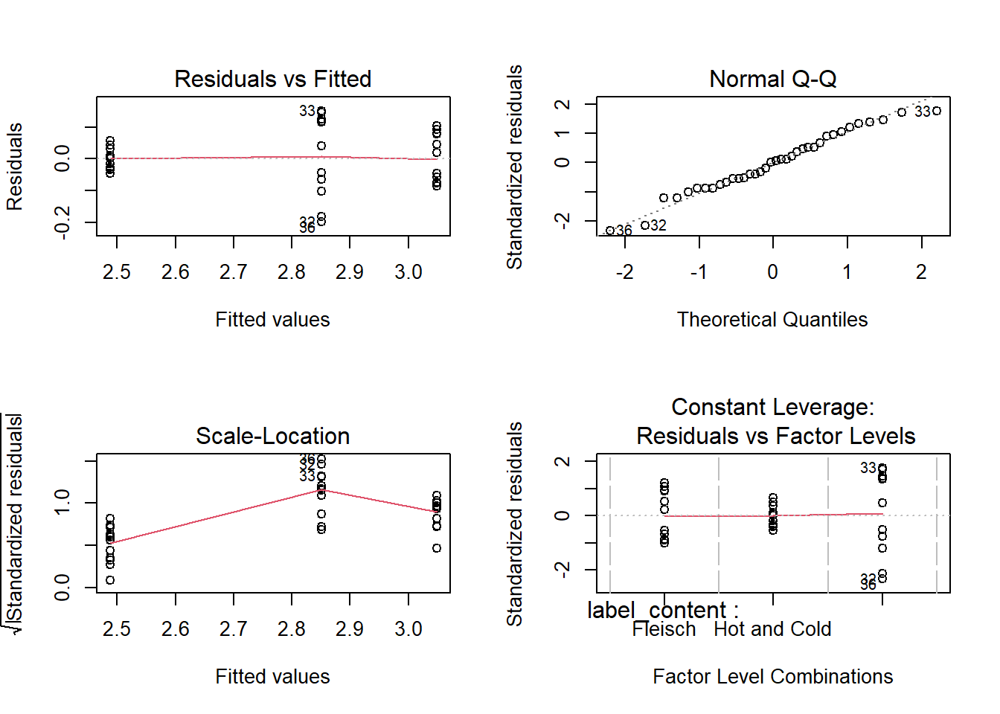
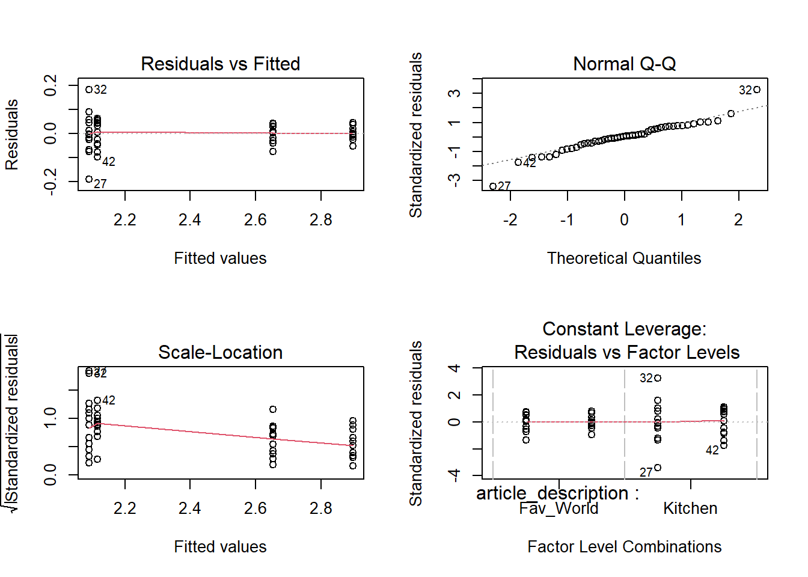

Download dieses Lösungsscript via “</>Code” (oben rechts)
Musterlösung Übung 2.2
Kommentierter Lösungsweg
#lade die Datendf <- readr::read_delim("datasets/stat1-4/Datensatz_novanimal_Uebung_Statistik2.1.csv", delim =";")# überprüft die Voraussetzungen für eine ANOVA# Schaut euch die Verteilungen der Mittelwerte an (plus Standardabweichungen)# Sind Mittelwerte nahe bei Null? # Gäbe uns einen weiteren Hinweis auf eine spezielle Binomial-Verteilung df |>group_by(label_content) |>summarise(tot_sold_mean =mean(tot_sold),tot_sold_sd =sd(tot_sold) )
# A tibble: 3 × 3
label_content tot_sold_mean tot_sold_sd
<chr> <dbl> <dbl>
1 Fleisch 1136. 200.
2 Hot and Cold 308. 23.5
3 Vegetarisch 739. 214.
# Boxplotggplot(df, aes(x = label_content, y= tot_sold)) +# Achtung: Reihenfolge spielt hier eine Rolle!stat_boxplot(geom ="errorbar", width =0.25) +geom_boxplot(fill="white", color ="black", size =1, width = .5) +labs(x ="\nMenu-Inhalt", y ="Anzahl verkaufte Gerichte pro Woche\n") +# achtung erster Hinweis einer Varianzheterogenität, wegen den Hot&Cold-Gerichten mytheme
#alternative mit baseboxplot(df$tot_sold~df$label_content)
# definiert das Modell (vgl. Skript Statistik 2)model <-aov(tot_sold ~ label_content, data = df)summary.lm(model)
Call:
aov(formula = tot_sold ~ label_content, data = df)
Residuals:
Min 1Q Median 3Q Max
-290.250 -135.083 1.667 125.500 282.417
Coefficients:
Estimate Std. Error t value Pr(>|t|)
(Intercept) 1135.58 48.92 23.211 < 2e-16 ***
label_contentHot and Cold -827.25 69.19 -11.956 1.54e-13 ***
label_contentVegetarisch -396.33 69.19 -5.728 2.15e-06 ***
---
Signif. codes: 0 '***' 0.001 '**' 0.01 '*' 0.05 '.' 0.1 ' ' 1
Residual standard error: 169.5 on 33 degrees of freedom
Multiple R-squared: 0.8125, Adjusted R-squared: 0.8012
F-statistic: 71.52 on 2 and 33 DF, p-value: 1.007e-12
# überprüft die Modelvoraussetzungenpar(mfrow =c(2,2))plot(model)

Fazit: Beim Überprüfen der Modellannahmen haben wir festgestellt, dass der Residualplot deutliche Abweichungen aufweist, die einem “Trichter” ähneln (wie im Statistik-Skript 2 erklärt). Dies bedeutet, dass die Annahme der Homoskedastizität nicht erfüllt ist. Welche Schritte könnten wir als nächstes unternehmen?
Wir sollten das “Buffet”-Menü aus unserer Analyse entfernen, da es in Wirklichkeit keine vollständigen Menüinformationen enthält. Beachte jedoch, dass dies zu einem Informationsverlust führt. Wir können diesen Ausschluss damit begründen, dass das “Buffet” nicht den gleichen strukturierten Menüinhalt aufweist wie die anderen Menüs.
Wir könnten eine Daten-Transformation in Betracht ziehen, zum Beispiel die Anwendung einer logarithmischen Transformation, um die Daten besser zu analysieren.
Eine andere Option wäre die Verwendung eines nicht-parametrischen Tests. Beachte jedoch, dass auch solche Tests bestimmte Voraussetzungen erfüllen müssen, um verlässliche Ergebnisse zu liefern.
Eine weitere Möglichkeit wäre die Anwendung eines general linear models (glm) mit einer Poisson- oder Quasipoisson-Link-Funktion, wie im Statistik-Skript 4 erklärt. Weitere Informationen dazu findest du im Skript Statistik 4. Link
# überprüft die Voraussetzungen des Welch-Tests:# Gibt es eine hohe Varianzheterogenität und ist die relative Verteilung der# Residuen gegeben? (siehe Statistik 2)# Ja Varianzheterogenität ist gegeben, aber die Verteilung der Residuen folgt# einem "Trichter", also keiner "normalen/symmetrischen" Verteilung um 0# Daher ziehe ich eine Transformation der AV einem nicht-parametrischen Test vor# für weitere Infos:# https://data.library.virginia.edu/interpreting-log-transformations-in-a-linear-model/# achtung hier log10, bei einer Rücktransformation zwingend beachtenmodel_log <-aov(log10(tot_sold) ~ label_content, data = df)par(mfrow =c(2, 2))plot(model_log) # scheint ok zu sein

summary.lm(model_log) # Referenzkategorie ist Fleisch
Call:
aov(formula = log10(tot_sold) ~ label_content, data = df)
Residuals:
Min 1Q Median 3Q Max
-0.198920 -0.059343 0.003477 0.062579 0.150567
Coefficients:
Estimate Std. Error t value Pr(>|t|)
(Intercept) 3.04908 0.02585 117.942 < 2e-16 ***
label_contentHot and Cold -0.56121 0.03656 -15.350 < 2e-16 ***
label_contentVegetarisch -0.19792 0.03656 -5.413 5.45e-06 ***
---
Signif. codes: 0 '***' 0.001 '**' 0.01 '*' 0.05 '.' 0.1 ' ' 1
Residual standard error: 0.08956 on 33 degrees of freedom
Multiple R-squared: 0.8802, Adjusted R-squared: 0.8729
F-statistic: 121.2 on 2 and 33 DF, p-value: 6.238e-16
TukeyHSD(model_log) # (vgl. Statistik 2)
Tukey multiple comparisons of means
95% family-wise confidence level
Fit: aov(formula = log10(tot_sold) ~ label_content, data = df)
$label_content
diff lwr upr p adj
Hot and Cold-Fleisch -0.5612085 -0.6509215 -0.4714955 0.0e+00
Vegetarisch-Fleisch -0.1979175 -0.2876305 -0.1082044 1.6e-05
Vegetarisch-Hot and Cold 0.3632910 0.2735780 0.4530041 0.0e+00
# Achtung Beta-Werte resp. Koeffinzienten sind nicht direkt interpretierbar# sie müssten zuerst wieder zurück transformiert werden, hier ein Beispiel dafür:# für Fleisch10^model_log$coefficients[1]
(Intercept)
1119.655
# für Hot & Cold,10^(model_log$coefficients[1] + model_log$coefficients[2])
(Intercept)
307.5216
# ist equivalent zu10^(model_log$coefficients[1]) *10^(model_log$coefficients[2])
(Intercept)
307.5216
# für Vegi10^(model_log$coefficients[1] + model_log$coefficients[3])
(Intercept)
709.8501
Methoden
Unser Ziel war es, die Unterschiede in den wöchentlichen Verkaufszahlen für verschiedene Menüinhalte zu untersuchen. Da die Anzahl der verkauften Menüs eine Zahlenangabe ist und die Menüinhalte kategorisch sind, haben wir eine einfaktorielle ANOVA durchgeführt.
Als wir das Modell überprüften, stellten wir fest, dass die Homoskedastizität stark verletzt war. Dies wurde auch durch den Boxplot bestätigt, den wir verwendet haben.
Um dieses Problem anzugehen, haben wir die Verkaufszahlen durchgeführt, um sie besser vergleichbar zu machen. Anschliessend haben wir erneut eine ANOVA durchgeführt und die Modellvoraussetzungen überprüft. Diesmal stellten wir fest, dass die Homoskedastizität (gleichmässige Streuung der Residuen) und die Normalverteilung der Residuen erfüllt waren.
Für weitere Informationen zur log-Transformation und zur Darstellung der Ergebnisse findest du hier zusätzliche Details.
Ergebnisse
Die wöchentlichen Verkaufszahlen für die verschiedenen Menüarten (Fleisch, Vegetarisch und Buffet) sind signifikant unterschiedlich (p < 0.001). Dies wird in Abbildung 1 anschaulich dargestellt, wo die Verkaufszahlen pro Menüart zu sehen sind.
Abbildung 24.1: Die wöchentlichen Verkaufzahlen unterscheiden sich je nach Menüinhalt stark. Das Modell wurde mit den log-tranformierten Daten gerechnet.
# definiert das Modell (Skript Statistik 2)model <-aov(tot_sold ~ article_description * member, data = df)summary.lm(model)
Call:
aov(formula = tot_sold ~ article_description * member, data = df)
Residuals:
Min 1Q Median 3Q Max
-91.00 -17.33 0.50 14.83 83.00
Coefficients:
Estimate Std. Error t value
(Intercept) 452.333 9.734 46.47
article_descriptionKitchen -327.000 13.766 -23.75
memberStudierende 340.667 13.766 24.75
article_descriptionKitchen:memberStudierende -334.333 19.469 -17.17
Pr(>|t|)
(Intercept) <2e-16 ***
article_descriptionKitchen <2e-16 ***
memberStudierende <2e-16 ***
article_descriptionKitchen:memberStudierende <2e-16 ***
---
Signif. codes: 0 '***' 0.001 '**' 0.01 '*' 0.05 '.' 0.1 ' ' 1
Residual standard error: 33.72 on 44 degrees of freedom
Multiple R-squared: 0.9864, Adjusted R-squared: 0.9855
F-statistic: 1063 on 3 and 44 DF, p-value: < 2.2e-16
# überprüft die Modelvoraussetzungen (Statistik 2)par(mfrow =c(2, 2)) # alternativ gäbe es die ggfortify::autoplot(model) funktionplot(model)
Fazit: Die Überprüfung des Modells zeigt, dass die Residuen (Fehler) zwar nicht perfekt normal verteilt sind, aber die Abweichungen sind nicht allzu gross (das zeigt der Q-Q Plot). Da die Anwendung einer Log-Transformation auf die Verkaufszahlen nicht zu einer signifikanten Verbesserung führt, habe ich mich entschieden, eine ANOVA ohne die log-transformierten Verkaufszahlen durchzuführen.
# sieht aus, als ob die Voraussetzungen für eine Anova nur geringfügig verletzt sind# mögliche alternativen:# 0. keine Tranformation der AV (machen wir hier)# 1. log-transformation um die grossen werte zu minimieren (nur möglich, wenn# keine 0 enthalten sind und die Mittelwerte weit von 0 entfernt sind (bei uns wäre dies klar erfüllt)# => bei Zähldaten ist dies leider nicht immer gegeben)# 2. nicht parametrische Test z.B. Welch-Test, wenn hohe Varianzheterogenität# zwischen den Residuen# 0) keine Tranformation# post-hov VergleicheTukeyHSD(model)
# 1) Alterativ: log-transformationmodel_log <-aov(log10(tot_sold) ~ article_description * member, data = df)summary.lm(model_log) # interaktion ist nun nicht mehr signifikant: vgl.
Call:
aov(formula = log10(tot_sold) ~ article_description * member,
data = df)
Residuals:
Min 1Q Median 3Q Max
-0.191372 -0.025043 0.003191 0.037604 0.182842
Coefficients:
Estimate Std. Error t value
(Intercept) 2.65417 0.01696 156.533
article_descriptionKitchen -0.56517 0.02398 -23.569
memberStudierende 0.24438 0.02398 10.191
article_descriptionKitchen:memberStudierende -0.21726 0.03391 -6.407
Pr(>|t|)
(Intercept) < 2e-16 ***
article_descriptionKitchen < 2e-16 ***
memberStudierende 3.71e-13 ***
article_descriptionKitchen:memberStudierende 8.51e-08 ***
---
Signif. codes: 0 '***' 0.001 '**' 0.01 '*' 0.05 '.' 0.1 ' ' 1
Residual standard error: 0.05874 on 44 degrees of freedom
Multiple R-squared: 0.9745, Adjusted R-squared: 0.9728
F-statistic: 561.4 on 3 and 44 DF, p-value: < 2.2e-16
# nochmals euren Boxplot zu beginn, machen diese Koeffizienten sinn?# überprüft die Modelvoraussetzungen (vgl. Skript Statistik 2)# bringt aber keine wesentliche Verbesserung, daher bleibe ich bei den# untransformierten Datenpar(mfrow =c(2, 2))plot(model_log)

# post-hov VergleicheTukeyHSD(model_log) # gibt sehr ähnliche Resultate im Vergleich zum nicht-transformierten Model
Unser Ziel war es, herauszufinden, ob es Unterschiede zwischen den preisgünstigeren und teureren Menülinien in Bezug auf die Zugehörigkeit zur Hochschule gibt. Dafür haben wir eine ANOVA mit Interaktion durchgeführt, da wir eine Art von Zahlenangabe für unsere Ergebnisse und zwei Faktoren (Menülinie und Hochschulzugehörigkeit) hatten.
Im ersten Modell haben wir festgestellt, dass die Voraussetzungen für eine ANOVA grösstenteils erfüllt waren, abgesehen von der Normalverteilung der Abweichungen (Residuen). Aus diesem Grund haben wir uns entschieden, auf eine log-Transformation der Zahlenangabe zu verzichten. Anschliessend haben wir zusätzlich Einzelvergleiche nach Tukey durchgeführt, um spezifische Unterschiede zwischen den Gruppen zu ermitteln.
Ein wichtiger Punkt zu beachten: Die Verkaufsdaten sind in Wirklichkeit Zähldaten und haben eine binomiale Verteilung, da sie keine negativen Werte haben können. Bei der Analyse stelle ich mir immer zwei Fragen:
Wie weit ist der Mittelwert von “Null” entfernt? Wenn die Daten keine starken Abweichungen von der Normalverteilung aufweisen, können wir trotzdem annehmen, dass sie normal verteilt sind.
Enthalten die Daten viele “Nullen”? Wenn dies der Fall ist, müssen wir eine spezielle binomiale Verteilung berücksichtigen, wie beispielsweise die Verwendung einer negativen binomialen Transformation mit einem general linear model (GLM) (siehe Skript Kapitel 4).
Ergebnisse
Die wöchentlichen Verkaufszahlen der verschiedenen Menülinien sind abhängig von der Zugehörigkeit zur Hochschule und zeigen signifikante Unterschiede (p < 0.001). Das bedeutet, dass Studierende die preisgünstigere Menülinie “Favorite & World” signifikant häufiger kaufen als Mitarbeitende. Überraschenderweise gibt es jedoch keine signifikanten Unterschiede zwischen Studierenden und Mitarbeitenden beim Kauf der teureren Menülinie “Kitchen”. Um die möglichen Gründe dafür zu verstehen, sind weitere Analysen erforderlich, beispielsweise unter Einbeziehung des Menüinhalts als zus$tzlicher Faktor resp. Variable.
Abbildung 24.2: Box-Whisker-Plots der wöchentlichen Verkaufszahlen pro Menü-Inhalte. Kleinbuchstaben bezeichnen homogene Gruppen auf p < .05 nach Tukeys post-hoc-Test.
Quellcode
---date: 2023-10-31lesson: Stat2thema: Einführung in lineare Modelleindex: 5format: html: code-tools: source: trueknitr: opts_chunk: collapse: false---# Stat2: Lösung 2.2 & 2.3S - Download dieses Lösungsscript via "\</\>Code" (oben rechts)## Musterlösung Übung 2.2### Kommentierter Lösungsweg```{r}#| echo: false#| results: hide# lade Packageslibrary("ggplot2")library("readr")library("dplyr")## definiert mytheme für ggplot2 (verwendet dabei theme_classic())mytheme <-theme_classic() +theme(axis.line =element_line(color ="black"),axis.text =element_text(size =12, color ="black"),axis.title =element_text(size =12, color ="black"),axis.ticks =element_line(size = .75, color ="black"),axis.ticks.length =unit(.5, "cm") )``````{r}#lade die Datendf <- readr::read_delim("datasets/stat1-4/Datensatz_novanimal_Uebung_Statistik2.1.csv", delim =";")# überprüft die Voraussetzungen für eine ANOVA# Schaut euch die Verteilungen der Mittelwerte an (plus Standardabweichungen)# Sind Mittelwerte nahe bei Null? # Gäbe uns einen weiteren Hinweis auf eine spezielle Binomial-Verteilung df |>group_by(label_content) |>summarise(tot_sold_mean =mean(tot_sold),tot_sold_sd =sd(tot_sold) )# Boxplotggplot(df, aes(x = label_content, y= tot_sold)) +# Achtung: Reihenfolge spielt hier eine Rolle!stat_boxplot(geom ="errorbar", width =0.25) +geom_boxplot(fill="white", color ="black", size =1, width = .5) +labs(x ="\nMenu-Inhalt", y ="Anzahl verkaufte Gerichte pro Woche\n") +# achtung erster Hinweis einer Varianzheterogenität, wegen den Hot&Cold-Gerichten mytheme#alternative mit baseboxplot(df$tot_sold~df$label_content)# definiert das Modell (vgl. Skript Statistik 2)model <-aov(tot_sold ~ label_content, data = df)summary.lm(model) # überprüft die Modelvoraussetzungenpar(mfrow =c(2,2))plot(model)```<br> **Fazit**: Beim Überprüfen der Modellannahmen haben wir festgestellt, dass der Residualplot deutliche Abweichungen aufweist, die einem "Trichter" ähneln (wie im Statistik-Skript 2 erklärt). Dies bedeutet, dass die Annahme der Homoskedastizität nicht erfüllt ist. Welche Schritte könnten wir als nächstes unternehmen?- Wir sollten das "Buffet"-Menü aus unserer Analyse entfernen, da es in Wirklichkeit keine vollständigen Menüinformationen enthält. Beachte jedoch, dass dies zu einem Informationsverlust führt. Wir können diesen Ausschluss damit begründen, dass das "Buffet" nicht den gleichen strukturierten Menüinhalt aufweist wie die anderen Menüs.- Wir könnten eine Daten-Transformation in Betracht ziehen, zum Beispiel die Anwendung einer logarithmischen Transformation, um die Daten besser zu analysieren.- Eine andere Option wäre die Verwendung eines nicht-parametrischen Tests. Beachte jedoch, dass auch solche Tests bestimmte Voraussetzungen erfüllen müssen, um verlässliche Ergebnisse zu liefern.- Eine weitere Möglichkeit wäre die Anwendung eines general linear models (glm) mit einer Poisson- oder Quasipoisson-Link-Funktion, wie im Statistik-Skript 4 erklärt. Weitere Informationen dazu findest du im Skript Statistik 4. [Link](https://www.ncbi.nlm.nih.gov/pmc/articles/PMC5869353/)<br>```{r}# überprüft die Voraussetzungen des Welch-Tests:# Gibt es eine hohe Varianzheterogenität und ist die relative Verteilung der# Residuen gegeben? (siehe Statistik 2)# Ja Varianzheterogenität ist gegeben, aber die Verteilung der Residuen folgt# einem "Trichter", also keiner "normalen/symmetrischen" Verteilung um 0# Daher ziehe ich eine Transformation der AV einem nicht-parametrischen Test vor# für weitere Infos:# https://data.library.virginia.edu/interpreting-log-transformations-in-a-linear-model/# achtung hier log10, bei einer Rücktransformation zwingend beachtenmodel_log <-aov(log10(tot_sold) ~ label_content, data = df)par(mfrow =c(2, 2))plot(model_log) # scheint ok zu seinsummary.lm(model_log) # Referenzkategorie ist FleischTukeyHSD(model_log) # (vgl. Statistik 2)# Achtung Beta-Werte resp. Koeffinzienten sind nicht direkt interpretierbar# sie müssten zuerst wieder zurück transformiert werden, hier ein Beispiel dafür:# für Fleisch10^model_log$coefficients[1]# für Hot & Cold,10^(model_log$coefficients[1] + model_log$coefficients[2])# ist equivalent zu10^(model_log$coefficients[1]) *10^(model_log$coefficients[2])# für Vegi10^(model_log$coefficients[1] + model_log$coefficients[3])```#### MethodenUnser Ziel war es, die Unterschiede in den wöchentlichen Verkaufszahlen für verschiedene Menüinhalte zu untersuchen. Da die Anzahl der verkauften Menüs eine Zahlenangabe ist und die Menüinhalte kategorisch sind, haben wir eine einfaktorielle ANOVA durchgeführt.Als wir das Modell überprüften, stellten wir fest, dass die Homoskedastizität stark verletzt war. Dies wurde auch durch den Boxplot bestätigt, den wir verwendet haben.Um dieses Problem anzugehen, haben wir die Verkaufszahlen durchgeführt, um sie besser vergleichbar zu machen. Anschliessend haben wir erneut eine ANOVA durchgeführt und die Modellvoraussetzungen überprüft. Diesmal stellten wir fest, dass die Homoskedastizität (gleichmässige Streuung der Residuen) und die Normalverteilung der Residuen erfüllt waren.Für weitere Informationen zur log-Transformation und zur Darstellung der Ergebnisse findest du [hier](https://dzchilds.github.io/stats-for-bio/data-transformations.html#presenting-results-from-analyses-of-transformed-data) zusätzliche Details.#### ErgebnisseDie wöchentlichen Verkaufszahlen für die verschiedenen Menüarten (Fleisch, Vegetarisch und Buffet) sind signifikant unterschiedlich (p < 0.001). Dies wird in Abbildung 1 anschaulich dargestellt, wo die Verkaufszahlen pro Menüart zu sehen sind.```{r}#| echo: false#| label: fig-plots-sol2-final#| fig.cap: Die wöchentlichen Verkaufzahlen unterscheiden sich je nach Menüinhalt stark.#| Das Modell wurde mit den log-tranformierten Daten gerechnet.#| tidy: true# plottet die originalen Beobachtungen, die nicht tranformierten Daten werden# hier aufgezeigt# Wichtig: einen Verweis auf die Log-Transformation benötigt es jedoch# aufbereitung für die Infos der Signifikanzen# => Alternative Lösungen findet ihr in der Musterlösung 2.3S# Multiplikation nur aus dem Grund, weil ich vorher einen anderen Datensatz hattedf1 <-data.frame(a =c(1, 1:3, 3), b =c(150, 151, 151, 151, 150) *15)df2 <-data.frame(a =c(1, 1, 2, 2), b =c(130, 131, 131, 130) *15)df3 <-data.frame(a =c(2, 2, 3, 3), b =c(140, 141, 141, 140) *15)ggplot(df, aes(x = label_content, y = tot_sold)) +stat_boxplot(geom ="errorbar", width = .25) +geom_boxplot(fill ="white", color ="black", size =1, width = .5) +# aus der Information aus dem Tukey Test von oben: Buffet-Vegetarischgeom_line(data = df1, aes(x = a, y = b)) +annotate("text",x =2, y =2320,label ="***", size =8 ) +# Buffet - Fleischgeom_line(data = df2, aes(x = a, y = b)) +annotate("text",x =1.5, y =2020,label ="***", size =8 ) +# Fleisch - Vegetarischgeom_line(data = df3, aes(x = a, y = b)) +annotate("text",x =2.5, y =2150,label ="***", size =8 ) +expand_limits(y =0) +# bezieht das 0 bei der y-Achse mit einlabs(x ="\nMenüinhalt", y ="Anzahl verkaufte Gerichte\n pro Woche\n") + mytheme# hier ein paar interessante Links zu anderen R-Packages, die es# ermöglichen signifikante Ergebniss in den Plot zu integrieren# https://www.r-bloggers.com/add-p-values-and-significance-levels-to-ggplots/# https://cran.r-project.org/web/packages/ggsignif/vignettes/intro.html```## Musterlösung Übung 2.3S (SozWis)- **Lese-Empfehlung** Kapitel 7 von [Manny Gimond](https://mgimond.github.io/Stats-in-R/ANOVA.html)### Kommentierter Lösungsweg```{r}#| echo: false# lade Datendf <-read_delim("datasets/stat1-4/Datensatz_novanimal_Uebung_Statistik2.3.csv", ";")# überprüft die Voraussetzungen für eine ANOVA# Schaut euch die Verteilungen der Mittelwerte der Responsevariable an# Sind Mittelwerte nahe bei Null? Gäbe uns einen weiteren Hinweis auf# eine spezielle Binomial-Verteilung (vgl. Statistik 4)df |>group_by(article_description) |>summarise(tot_sold_mean =mean(tot_sold),tot_sold_sd =sd(tot_sold) )# visualisiere dir dein Model, was siehst du?# sind möglicherweise gewiesse Voraussetzungen verletzt?# Boxplotggplot(df, aes(x =interaction(article_description, member), y = tot_sold)) +# Achtung: Reihenfolge spielt hier eine Rolle!stat_boxplot(geom ="errorbar", width =0.25) +geom_boxplot(fill ="white", color ="black", size =1, width = .5) +labs(x ="\nMenülinie nach Hochschulzugehörigkeit", y ="Anzahl verkaufte Gerichte\n") +# ändere Gruppennamen händischscale_x_discrete(limits =c("Fav_World.Mitarbeitende", "Kitchen.Mitarbeitende","Fav_World.Studierende", "Kitchen.Studierende" ),breaks =c("Fav_World.Mitarbeitende", "Fav_World.Studierende","Kitchen.Mitarbeitende", "Kitchen.Studierende" ),labels =c("Fav_World\nMitarbeitende", "Fav_World\nStudierende","Kitchen\nMitarbeitende", "Kitchen\nStudierende" ) ) + mytheme # wie sind die Voraussetzungen erfüllt?``````{r}# definiert das Modell (Skript Statistik 2)model <-aov(tot_sold ~ article_description * member, data = df)summary.lm(model)# überprüft die Modelvoraussetzungen (Statistik 2)par(mfrow =c(2, 2)) # alternativ gäbe es die ggfortify::autoplot(model) funktionplot(model)```**Fazit**: Die Überprüfung des Modells zeigt, dass die Residuen (Fehler) zwar nicht perfekt normal verteilt sind, aber die Abweichungen sind nicht allzu gross (das zeigt der Q-Q Plot). Da die Anwendung einer Log-Transformation auf die Verkaufszahlen nicht zu einer signifikanten Verbesserung führt, habe ich mich entschieden, eine ANOVA ohne die log-transformierten Verkaufszahlen durchzuführen.```{r }# sieht aus, als ob die Voraussetzungen für eine Anova nur geringfügig verletzt sind# mögliche alternativen:# 0. keine Tranformation der AV (machen wir hier)# 1. log-transformation um die grossen werte zu minimieren (nur möglich, wenn# keine 0 enthalten sind und die Mittelwerte weit von 0 entfernt sind (bei uns wäre dies klar erfüllt)# => bei Zähldaten ist dies leider nicht immer gegeben)# 2. nicht parametrische Test z.B. Welch-Test, wenn hohe Varianzheterogenität# zwischen den Residuen# 0) keine Tranformation# post-hov VergleicheTukeyHSD(model)# 1) Alterativ: log-transformationmodel_log <- aov(log10(tot_sold) ~ article_description * member, data = df)summary.lm(model_log) # interaktion ist nun nicht mehr signifikant: vgl.# nochmals euren Boxplot zu beginn, machen diese Koeffizienten sinn?# überprüft die Modelvoraussetzungen (vgl. Skript Statistik 2)# bringt aber keine wesentliche Verbesserung, daher bleibe ich bei den# untransformierten Datenpar(mfrow = c(2, 2))plot(model_log)# post-hov VergleicheTukeyHSD(model_log) # gibt sehr ähnliche Resultate im Vergleich zum nicht-transformierten Model```#### MethodeUnser Ziel war es, herauszufinden, ob es Unterschiede zwischen den preisgünstigeren und teureren Menülinien in Bezug auf die Zugehörigkeit zur Hochschule gibt. Dafür haben wir eine ANOVA mit Interaktion durchgeführt, da wir eine Art von Zahlenangabe für unsere Ergebnisse und zwei Faktoren (Menülinie und Hochschulzugehörigkeit) hatten.Im ersten Modell haben wir festgestellt, dass die Voraussetzungen für eine ANOVA grösstenteils erfüllt waren, abgesehen von der Normalverteilung der Abweichungen (Residuen). Aus diesem Grund haben wir uns entschieden, auf eine log-Transformation der Zahlenangabe zu verzichten. Anschliessend haben wir zusätzlich Einzelvergleiche nach Tukey durchgeführt, um spezifische Unterschiede zwischen den Gruppen zu ermitteln.Ein wichtiger Punkt zu beachten: Die Verkaufsdaten sind in Wirklichkeit Zähldaten und haben eine binomiale Verteilung, da sie keine negativen Werte haben können. Bei der Analyse stelle ich mir immer zwei Fragen:1. Wie weit ist der Mittelwert von "Null" entfernt? Wenn die Daten keine starken Abweichungen von der Normalverteilung aufweisen, können wir trotzdem annehmen, dass sie normal verteilt sind.2. Enthalten die Daten viele "Nullen"? Wenn dies der Fall ist, müssen wir eine spezielle binomiale Verteilung berücksichtigen, wie beispielsweise die Verwendung einer negativen binomialen Transformation mit einem general linear model (GLM) (siehe Skript Kapitel 4).#### ErgebnisseDie wöchentlichen Verkaufszahlen der verschiedenen Menülinien sind abhängig von der Zugehörigkeit zur Hochschule und zeigen signifikante Unterschiede (p < 0.001). Das bedeutet, dass Studierende die preisgünstigere Menülinie "Favorite & World" signifikant häufiger kaufen als Mitarbeitende. Überraschenderweise gibt es jedoch keine signifikanten Unterschiede zwischen Studierenden und Mitarbeitenden beim Kauf der teureren Menülinie "Kitchen". Um die möglichen Gründe dafür zu verstehen, sind weitere Analysen erforderlich, beispielsweise unter Einbeziehung des Menüinhalts als zus$tzlicher Faktor resp. Variable.```{r}#| echo: false#| label: fig-plots-sol3-final#| fig.cap: Box-Whisker-Plots der wöchentlichen Verkaufszahlen pro Menü-Inhalte. Kleinbuchstaben#| bezeichnen homogene Gruppen auf *p* < .05 nach Tukeys post-hoc-Test.# zeigt die Ergebnisse anhand eines Boxplotslibrary("multcomp")# bei Interaktionen gibt es diesen Trick, um bei den multiplen Vergleiche,# die richtigen Buchstaben zu bekommendf$cond_label <-interaction(df$article_description, df$member) #model1 <-aov(tot_sold ~ cond_label, data = df)letters <-cld(glht(model1, linfct =mcp(cond_label ="Tukey")))ggplot(df, aes(x =interaction(article_description, member), y = tot_sold)) +stat_boxplot(geom ="errorbar", width =0.25) +geom_boxplot(fill ="white", color ="black", size = .75, width = .5) +labs(x ="\nMenülinie nach Hochschulzugehörigkeit", y ="Anzahl verkaufte Gerichte\n") +scale_x_discrete(limits =c("Fav_World.Mitarbeitende", "Kitchen.Mitarbeitende","Fav_World.Studierende", "Kitchen.Studierende" ),breaks =c("Fav_World.Mitarbeitende", "Fav_World.Studierende","Kitchen.Mitarbeitende", "Kitchen.Studierende" ),labels =c("Fav_World\nMitarbeitende", "Fav_World\nStudierende","Kitchen\nMitarbeitende", "Kitchen\nStudierende" ) ) +annotate("text", x =1:4, y =1000, label = letters$mcletters$Letters, size =6) + mythemeggsave("stat1-4/distill-preview.png",height =12,width =20,device = png)```